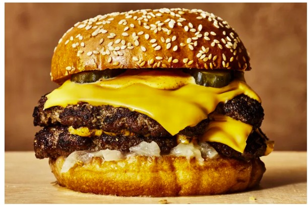

Burger
Home

Description
This is just a burger with homemade ingredients. It is a simple yet wholesome recipe. Yum yum yum...
You can use the same ingredients that are listed below, but you're more than welcome to try and modify this recipe according to your own text
Ingredients
- Burger Buns (Or lettuce if you're into weird stuff lol)
- Beef patties, seasoned to your own taste
- Tomatoes
- Lettuce
- Mozzarela cheese slice
- Sauces:
- Ketchup
- Mayonnaise
- Mustard
- Relish
Steps
- Cook the meat
- Add a slice of cheese on top of the beef patty
- Once melted, transfer the patty with the cheese to the bread
- Add vegetables of your choice
- Add sauces to taste